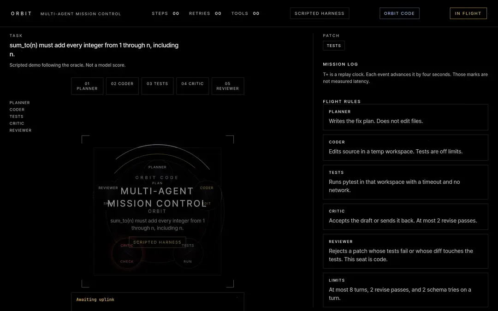
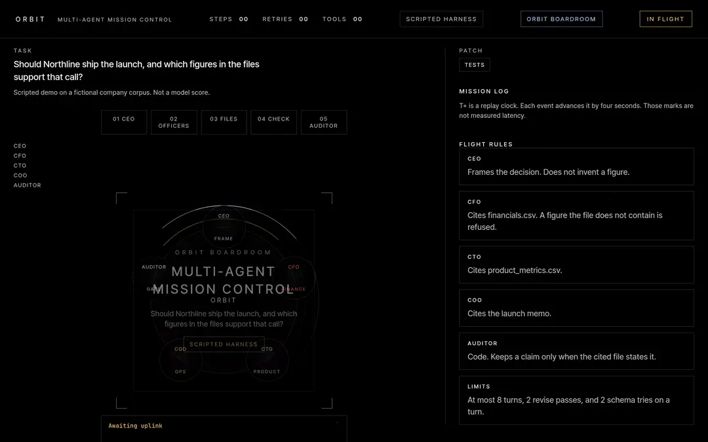

02 / Multi-agent systems
Orbit
Orbit Code: a planner, a coder, a test runner, and a reviewer. The reviewer can refuse a patch that fails the hidden tests or edits the tests.
What it provesFine-tuning a 1.5B model raised its schema-valid tool-call rate from 0.333 to 0.764, with a 95% interval above zero. In code repair, a reviewer can refuse a patch that fails the hidden tests.

Stack Python, PyTorch, Transformers, Claude API
Orbit Code
The team passed 29 of 32. The single agent passed 27 of 32. That gap is not an improvement.
code-eval-v2, model claude-haiku-5-5, 32 frozen tasks, scored once. The policy saw the issue and the source files, not the hidden tests. The paired 95% interval on pass@1 is 0.000 to 0.15625 and includes zero. pass_at_1 is 0.90625 for the team and 0.84375 for the single agent, which is 29/32 and 27/32.
The reviewer refused 1 of 32 team tasks and 2 of 32 single-agent tasks. On the team run, mf-span and zip-safe failed the hidden test and were not refused. On the single-agent run, mf-span, mf-csv, and zip-safe failed and were not refused. The reviewer can reject a patch. On this run it did not reject every hidden-test failure.
Single agent 27 of 32. Paired 95% interval 0.000 to 0.15625, includes zero, so the gap is not an improvement. claude-haiku-5-5, code-eval-v2, scored once. Files results/code_v2/claude-haiku-5-5/team.json and results/code_v2/claude-haiku-5-5/comparison.json.
Boardroom
Executive agents. The auditor refuses a number the evidence does not support.
This is a scripted demo, the same idea as the incident commander: a claim does not ship without evidence. There is no score file for Boardroom.

Executive agents. The auditor refuses a number the evidence does not support. Scripted demo.
Orbit · Incident commander
Incident commander
A scripted demo on a fictional corpus. Agents investigate a checkout outage, and the auditor refuses a fake root cause. Not a measured score.
Mission control replay
How many laser jobs ran longer than the second-person limit written in the laser note?
Read every step as text
Each step is read from a JSONL trace the engine wrote. The clock is a replay clock, not measured latency. The scripted harness is a fixed check of the tools that follows each task's oracle, not a language model, so these replays show the protocol, not model skill. This trace is the incident-commander scripted demo on a fictional corpus. It is not a measured score.
Fine-tuning
The fine-tune raised the schema-valid rate. Task success is not an improvement.
Qwen2.5-1.5B-Instruct, harness v3, frozen 12-task test, scored once. Schema-valid rate, base team to fine-tuned adapter: 0.333 → 0.764. The 95% interval on that difference is 0.264 to 0.607, above zero. Task success is 4 vs 2 of 12. That interval, −0.167 to 0.500, includes zero, so task success is not an improvement. The fine-tuned team refused 1 of 2 traps.
The single agent passed 2 of 12, both of them traps, with schema-valid rate 1.000. That rate is 1.000 because the refusals were schema-valid, not because the tasks were solved. Against that single agent, the fine-tuned team's schema-valid interval is below zero.
The distilled team passed 2 of 12, schema-valid 0.448. Against the base team, task success shows no difference and the schema-valid interval, −0.064 to 0.278, includes zero. The result files name the model and the adapters (finetune/outputs/adapter and finetune/outputs-distill/adapter). They do not name the GPU.
Harness v3 rescore is measured. Files: results/v3_qwen1.5b/single_base.json, results/v3_qwen1.5b/team_base.json, results/v3_qwen1.5b/team_lora.json, results/v3_qwen1.5b/team_distill.json, and results/v3_qwen1.5b/comparison.json (paired percentile bootstrap, 10,000 resamples, seed 0). Copied into data/measurements/orbit/v3_qwen1.5b/. An interval that includes zero is not an improvement.
Schema-valid rate, base team to fine-tuned team. 95% interval 0.264 to 0.607, above zero. Task success 2 of 12 to 4 of 12, interval −0.167 to 0.500, includes zero, so task success is not an improvement. File results/v3_qwen1.5b/comparison.json.
Schema-valid 0.448. Task success 2 of 12. Trap refusals 2 of 2. Against the base team, task success is 0.000 to 0.000 and schema-valid is −0.064 to 0.278 (includes zero). File results/v3_qwen1.5b/team_distill.json.
Where this goes
A team is worth trusting when a reviewer can refuse the work, and when the score says what the interval says.
Orbit Code is that pattern on code: planner, coder, test runner, reviewer. Boardroom and the incident commander are scripted demos of the same refusal, not scores. The fine-tuning table is a measured rescore, and the rows that include zero are not called improvements.
Architecture
Run it yourself
Python 3.11 or newer. The demo targets an 8 GB machine with the 0.5B model. QLoRA and bitsandbytes are CUDA-only; make setup does not install them, and the demo never imports them. make doctor prints timings for the machine you run it on; this page does not publish those readings.
macOS and Linux
python3 -m venv .venv
source .venv/bin/activate
make setup && make doctor
make doctor-live
make demoWindows
py -3.11 -m venv .venv
.venv\Scripts\activate
py -3.11 -m pip install -e ".[dev]" -r requirements-infer.txt
py -3.11 -m orbit_agents.doctor
py -3.11 -m orbit_agents.serveOpen the localhost URL the server prints. Pick a bundled task with the scripted harness, or type a question and choose Transformers, Ollama or llama.cpp. All three stay on your machine.
Figures on this page are read from data/projects.json. The Orbit scores cite data/measurements/orbit/, copied from the measured archives.